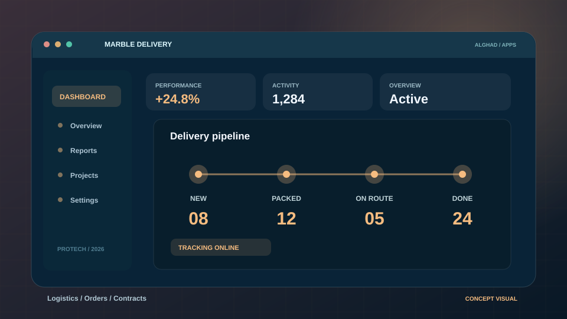
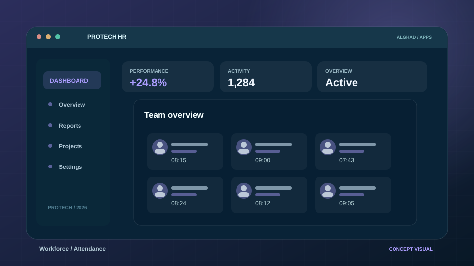
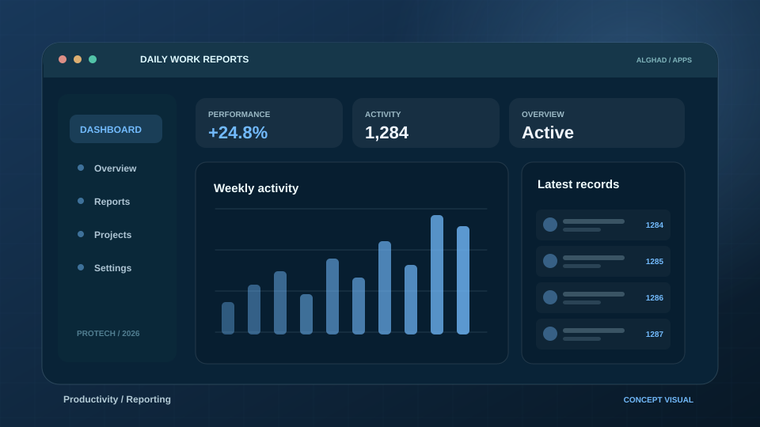
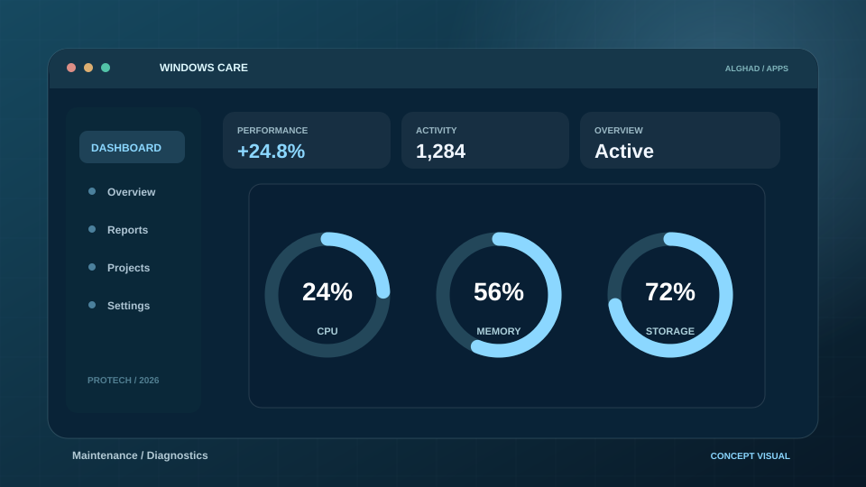
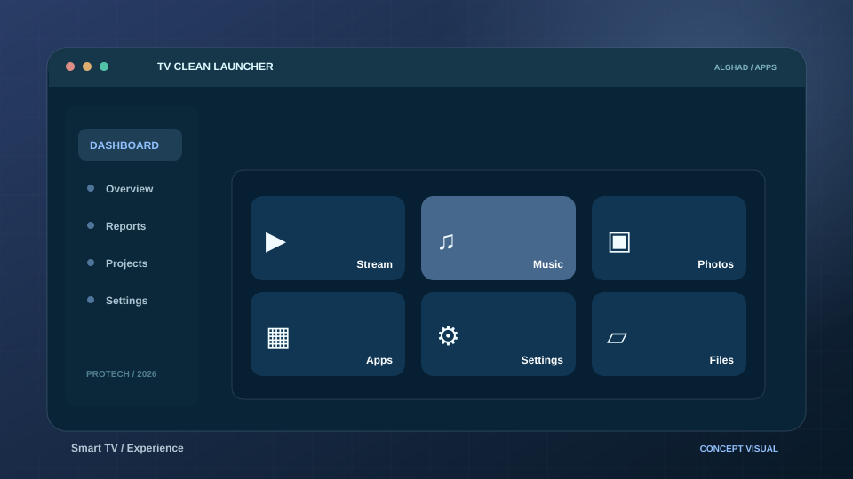

Beta · نسخة عامة للتجربة
Marble Delivery Pro
تنظيم تسليم الرخام والطلبات والعقود والمرفقات والتقارير في واجهة عربية.
الإصدار 10.0.5 · تجريبينطوّر برامج Windows وAndroid للمصانع والمعارض وفرق التصميم والإدارة، من تخطيط المطابخ وإدارة الرخام إلى الموارد البشرية والتقارير. اطّلع على المنتجات والإصدارات المتاحة، واعرف حالة كل برنامج بوضوح.
الصور المعروضة توضيحية وليست لقطات شاشة فعلية.
اختر برنامجًا لعرض ميزاته وخيارات التحميل المباشر من GitHub Releases عند توفرها، مع توضيح حالة كل إصدار.

تنظيم تسليم الرخام والطلبات والعقود والمرفقات والتقارير في واجهة عربية.
الإصدار 10.0.5 · تجريبي
منصة Windows لإدارة شؤون الموظفين والحضور والإجازات والرواتب والتقارير.
الإصدار 23.0.1 · تجريبي
إنشاء تقارير عمل يومية مخصصة بالكامل دون أسماء أو أقسام مفروضة مسبقًا.
الإصدار 15.5.0 · تجريبيإدارة تنزيل وتشغيل الفيديو والصوت على Android مع تنظيم ملفات الوسائط المحلية.
الإصدار 6.0.17 · تجريبيإدارة احترافية لأعمال الرخام والبورسلان: العملاء والعقود والألواح والمخزون والتقارير.
الإصدار 2.0.0 · تجريبيتصميم المطابخ من مخطط الغرفة والخزائن إلى معاينة 3D والتصنيع والتصدير.
قيد التطوير
صيانة Windows وتشخيص الأعطال وتحسين الأداء وإدارة المكونات الاختيارية.
قيد التطوير
تنظيم عروض الأسعار والعقود ومعلومات المستندات في أدوات مكتبية عملية.
قيد التطوير
واجهة Android TV مبسطة ومنظمة للوصول إلى تطبيقاتك المفضلة.
قيد التطويرجرّب تغيير عبارة البحث أو اختيار تصنيف آخر.
علامة «مكتمل» تشير إلى وجود المستودع العام في GitHub، وليس اعتماد الاختبارات النهائية لكل تطبيق. الصور توضيحية وليست لقطات شاشة فعلية، وروابط الإصدارات التجريبية تُعرض بشفافية.
اختر إصدارك مباشرة من GitHub الرسمي. تتوفر ملفات Setup وPortable وAPK بحسب كل برنامج؛ وتظهر الإصدارات التجريبية بوضوح دون إخفاء حالتها.
الإصدار 2.0.0 · Windows x64 • UNSIGNED Preview · 45.7 MB
SHA-256: 8c7dccb61320bf220875a248b6938e01cdfe6c3fe8a75524bf4c40c52f1a84b0الإصدار 10.0.5 · Windows • Setup · 22.5 MB
SHA-256: 21195b80c787ec08cfe58f1d3123eed578a5c599b35c7fda59ed8b3200fe9441الإصدار 23.0.1 · Windows • Setup · 28.0 MB
SHA-256: 22cf0fb1429ff1f0fd3a88357006b71a51fa648aa37e9fb87e649f3983814991الإصدار 15.5.0 · Windows • نسخة عامة تجريبية · 28.4 MB
SHA-256: 3a3a6959ccf09f522fe7b729ed790be7e3e85e8130412336b6e299a576f07811الإصدار 6.0.17 · Android • معظم الأجهزة المتوافقة · 217.9 MB
SHA-256: b216f1914d8730ec85c7009375520a2e4c4ba3d8c0096fbe98d51bfbb7d04e46تاريخ مراجعة الروابط: 7 نوفمبر 2026. علامة Preview تعني إصدارًا تجريبيًا؛ ولا تعني أن ملف البرنامج موقّع رقميًا أو خاليًا من تنبيهات التثبيت.
Alghad Digital مساحة تجمع مشاريع برمجية متخصصة في الإنتاجية، وإدارة الأعمال، والتصميم، والتطبيقات اليومية. نركز على وضوح التجربة وتطوير الميزات التي يحتاجها المستخدم فعلًا.
شاهد مجموعة البرامجتطبيقات تستهدف احتياجات فعلية بدل ميزات بلا فائدة.
تحسينات وإصدارات تُضاف تدريجيًا بعد التحقق منها.
مشاريع لسطح المكتب والجوال والتلفزيون الذكي.
تمييز واضح بين المتاح للاطلاع وما زال قيد العمل.
ثلاثة مشاريع من عوالم مختلفة — تعرّف عليها من خلال عروض بصرية مخصصة توضح طبيعة كل منتج.
أدوات عملية للبحث والصيانة والوسائط والإنتاجية؛ صور توضيحية أُنشئت خصيصًا لهذه البطاقات، وروابطها تقود إلى المواقع الرسمية للمطورين فقط.
يمكنك تصفح قائمة برامج Windows المجانية وروابطها الرسمية حتى عند تعطيل JavaScript.
التراخيص تختلف: بعض الأدوات مفتوحة المصدر، وبعضها مجاني بشروط؛ IrfanView مجاني للاستخدام غير التجاري. روابط الأزرار تفتح الموقع الرسمي للتنزيل ولا تستضيف ملفات التثبيت على الغد الرقمي. احفظ بياناتك قبل تهيئة أي USB باستخدام Rufus أو Ventoy.
نميز بين أمان الاتصال بالموقع وأمان تثبيت البرامج: موقع مشفّر لا يعني بالضرورة أن كل ملف EXE أو APK موقّع رقميًا أو معتمد من نظام التشغيل.
نعتمد HTTPS على النطاق الرسمي، ونعرض الروابط من نفس المصدر. لا تطلب الصفحة كلمات مرور أو بيانات حساسة لتحميل البرامج.
الاتصال عبر HTTPSتنتقل مباشرة إلى ملفات GitHub Releases الخاصة بحساب المطور. لا نستخدم روابط مختصرة أو مواقع تنزيل مجهولة أو إعلانات تحميل مضللة.
عند توفر SHA-256، قارن قيمة بصمة الملف مع ملف التحقق المنشور. وقد تظهر تنبيهات SmartScreen للملفات غير الموقعة؛ لا تعطل الحماية لتجاوزها.
إذا ظهر في Chrome شريط «غير آمن»، تحقق من تفاصيل الشهادة في المتصفح وافتح الموقع من رابط HTTPS جديد. لا يُصلح التحذير تغيير شكل الصفحة أو إخفاء الرسالة؛ يجب معالجة السبب في الاتصال نفسه.
معلومات سريعة قبل استعراض أي برنامج.
اختر «تفاصيل البرنامج» لتظهر نسخ التحميل المباشر من GitHub Releases عند توفرها، أو استخدم زر «تحميل مباشر» في بطاقة البرنامج. إذا لم تتوفر نسخة عامة، سنوضح ذلك بدل عرض رابط غير صالح.
الموقع يستخدم HTTPS وروابط GitHub الرسمية، لكن Windows SmartScreen أو Android قد ينبهان بشأن ملفات غير موقعة رقميًا أو تطبيقات لم تكتسب سمعة ناشر بعد. لا تعطل الحماية؛ راجع جهة الإصدار والتوقيع وملف SHA-256 عند توفره. لا يمكن لموقع الويب وحده إزالة تحذيرات تثبيت الملفات التنفيذية.
لا. تختلف حالة وحقوق نشر كل مشروع؛ وجود مستودع عام لا يعني أن جميع الإصدارات نهائية أو أن جميع التبعيات مجانية. راجع LICENSE وملاحظات الإصدار في GitHub.
تختلف المتطلبات بحسب البرنامج. يظهر النظام المستهدف في بطاقة كل تطبيق، ويمكن فتح التفاصيل للاطلاع على إصدار المشروع وميزاته وملاحظات النشر.
تغطية إخبارية مختارة من مصادر تقنية عربية وصحف دولية. نعرض العناوين والتواريخ وروابط المقالات الأصلية، دون إعادة نشر محتوى الجهات الإخبارية.
بعض المصادر تُعرض كرابط متابعة فقط إذا لم تسمح بخلاصة RSS متاحة. جميع الحقوق والعناوين محفوظة لناشريها، وقراءة الخبر الكامل تتم عبر موقع الناشر.
سواء كنت تستفسر عن أحد برامجنا، أو ترغب في اقتراح ميزة جديدة، أو تبحث عن تعاون تقني، يسعدنا استقبال رسالتك عبر البريد الإلكتروني الرسمي لـ ProTech.
العنوان الرسمي للتواصل بشأن البرامج والخدمات.
protech.2025.2026@gmail.comيُفتح تطبيق البريد المثبّت لديك عند الضغط على «إرسال رسالة». لا نجمع رسائلك أو نخزنها عبر الموقع.
الغد ديجتال (Alghad Digital) يعرض برامج Pro Tech (بروتك). ولمن يبحث باسم «جيل الغد» عن هذه البرامج: العنوان الرسمي هو alghad.digital. استكشف صفحات البرامج وروابط الإصدارات الفعلية.